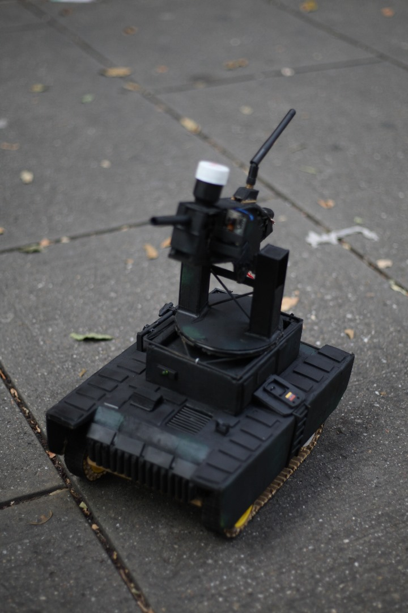

Soy un ingeniero en sistemas, nacido en Venezuela . Tengo 20 años, con 5 años de experiencia en programación. Me apasionan los retos técnicos y la creación de soluciones que combinan software, automatización y hardware.
A lo largo de mi trayectoria he trabajado en proyectos personales y prácticos que van desde automatización de procesos con Python hasta sistemas embebidos con microcontroladores. Me gusta aprender de forma autodidacta y constantemente busco mejorar mis habilidades enfrentando problemas reales.
Disfruto especialmente los desafíos que requieren lógica, creatividad y pensamiento analítico, ya que considero que ahí es donde realmente se crece como desarrollador.
Habilidades Blandas
Bilingue (Español - Nativo / Ingles - C1).
Trabajo en equipo.
Rapido Aprendizaje.
Autodidacta.
Alta capacidad de adaptación.
Resolución de problemas.
Pensamiento lógico y analítico.
Experiencia en Automatización de procesos.
Creatividad aplicada a problemas técnicos.
Optimización de procesos y flujos de trabajo.
Comunicación técnica efectiva.
Habilidades Tecnicas
JavaScript (JS)
HTML / CSS
PHP
Python
MySQL
C++
Linux
Microcontroladores (Arduino / ESP32)
Redes
Servidores
Scrum
Vehículo terrestre de exploración con microcontroladores
Desarrollo de un vehículo terrestre no tripulado orientado a exploración y pruebas de integración entre software, hardware y automatización.
El proyecto fue construido utilizando microcontroladores ESP32, programación en C++ y Python, incorporando transmisión de video en tiempo real
y una interfaz gráfica capaz de calcular y visualizar la trayectoria parabólica del proyectil según el ángulo de la torreta.

Funciones principales:
Integración de un sistema de control inalámbrico mediante un control de PS3, donde el ESP32 procesa las señales recibidas y coordina el funcionamiento de los distintos componentes del vehículo.
Desplazamiento y control de orugas mediante motores DC.
Movimiento y orientación de la torreta utilizando servomotores.
Sistema de disparo controlado por motores dedicados.
Implementación de un módulo ESP32-CAM instalado en la torreta, encargado de transmitir video en tiempo real hacia un servidor web para supervisión remota y visualización de la mira.
Desarrollo de un script en Python utilizando la librería OpenCV (CV2) para procesar el video recibido, añadiendo elementos gráficos como la mira y la representación dinámica de la trayectoria parabólica del proyectil.
Automatización de procesos administrativos con Python
Desarrollo de una solución de automatización orientada a optimizar procesos administrativos y reducir tareas manuales repetitivas.
El sistema fue desarrollado en Python e integrado con múltiples aplicaciones y herramientas externas, permitiendo automatizar
flujos de trabajo relacionados con correos electrónicos, procesamiento de archivos, acceso remoto y manipulación de sistemas administrativos.
El proyecto interactuaba con plataformas y aplicaciones como Outlook, AnyDesk, Microsoft Excel, WinRAR, TinyTask,
A2 Softway Administrativo y A2 SmartTools, coordinando distintos procesos de manera automática desde un servidor local.
Funciones principales:
Automatización del monitoreo de correos electrónicos mediante Outlook, donde el sistema filtraba mensajes específicos, descargaba archivos adjuntos y procesaba automáticamente documentos Excel.
Integración con AnyDesk para establecer conexiones remotas según el destinatario o la empresa asociada, permitiendo extraer información desde equipos remotos y almacenarla temporalmente en el servidor local.
Desarrollo de automatizaciones capaces de interactuar con aplicaciones de escritorio como A2 Softway Administrativo, A2 SmartTools y Microsoft Excel, utilizando Python, TinyTask y técnicas de reconocimiento visual mediante OpenCV.
Procesamiento, organización y validación de información administrativa para facilitar operaciones internas y disminuir tiempos de ejecución manual.
Implementación de rutinas automáticas de respaldo y limpieza, encargadas de devolver la información procesada a los equipos remotos, eliminar archivos temporales y resguardar la data necesaria en el servidor local.
Procesamiento y organización automática de datos con Python
Desarrollo de un script en Python diseñado para automatizar la extracción, procesamiento y organización de información recibida por correo electrónico.
El sistema era capaz de conectarse automáticamente al correo, descargar archivos en formato .txt, interpretar la información contenida
y convertirla en documentos .xlsx estructurados y listos para análisis o gestión administrativa.
Funciones principales:
Conexión automática al correo electrónico para detectar y descargar archivos de texto enviados por distintas fuentes.
Lectura y procesamiento de archivos .txt, identificando y separando datos relevantes mediante reglas de filtrado y organización.
Transformación de datos desordenados en hojas de cálculo Excel (.xlsx) con un formato estructurado y fácil de interpretar.
Clasificación, limpieza y reorganización automática de información para reducir errores manuales y optimizar tiempos de trabajo.
Generación de reportes listos para uso administrativo y análisis posterior.